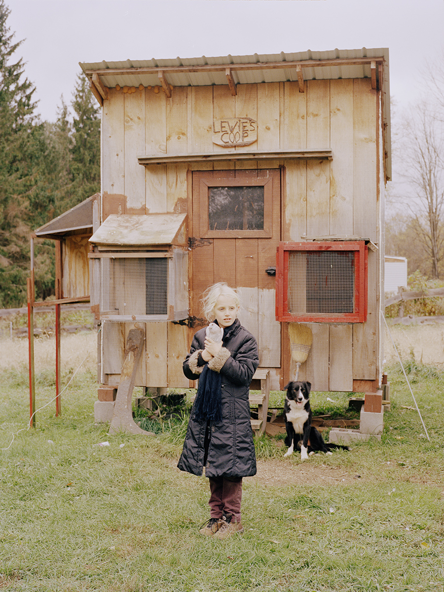
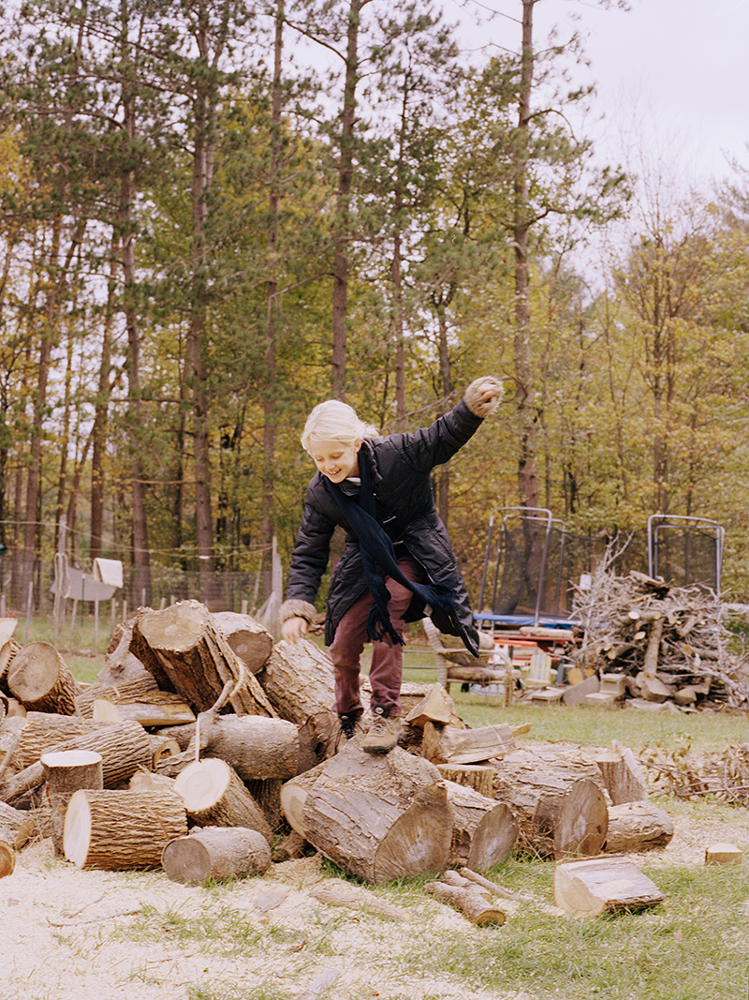

LEARN.PLAY.NATURE.

Play is regulated, diminishing both creative freedom and the ability to have meaningful play.
In comparison to the past generation’s history of free-range outdoor play — building forts, exploring backyard forests, and only returning at the day’s end for dinnertime — today’s children spend only half the time outdoors and are often under constant surveillance for fear of safety.
Play is regulated, diminishing both creative freedom and the ability to have meaningful play in public parks or playgrounds.
Our fears for the youngest generation have led to a more sedentary lifestyle, in which unstructured play is reduced and the ‘helicopter parent’ model emerges.² Although the safety and health of our children is a priority, the loss of freedom hinders the learning and exploratory process in which children can discover their surroundings organically. We cannot always have full control, and allowing a healthy balance of safety and freedom introduces invaluable lessons taught through experience, mistakes, and fostered curiosity.

Nature should
be introduced as
something to be
nurtured, because
it benefits us all;
it becomes its own
teacher, friend, and
nurturer in return.
Most discussions on play for children revolve around its integration into teaching regimens. However, play should be given just as much importance in their home life, as parents and teachers alike hold the responsibility to ensure their child is exploring the world.
With awareness comes an understanding for the earth — something often lost as we run through life in our fast-paced world. If we forget to nurture compassion, intentionality, and curiosity then we begin to breed apathy for others and our surroundings. Instead, we must give children the language and space required to empathize with people, the planet, and everything on it. If we take it upon ourselves to set the precedent, we also must set a living example of our own. Nature should be introduced as something to be nurtured; it benefits us all, and becomes its own teacher, friend, and nurturer in return
